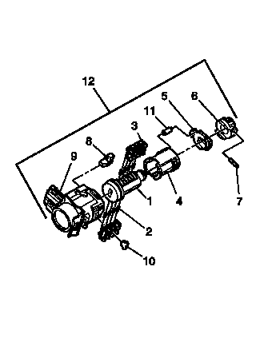
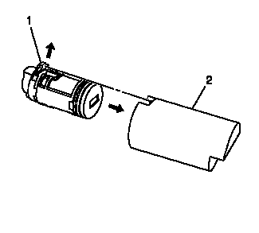
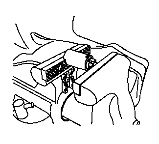

前侧门锁芯编码（单向离合器）

车门锁芯使用 8 个切口位置中的 8 个。弹子的位置从一侧交错至另一侧，两侧各有4个，不是自固定和卡入式。
注意:
侧铣钥匙适用的所有锁芯都有左右弹子。弹子齿的位置决定其在左侧还是在右侧。本程序中的插图顶部表示的是右弹子，底部表示的是左弹子。所有弹片标记为 1R、1L、2R 或 2L。数字指切口深度，字母表示右或左。
1.
固定住车门锁芯（1），使 4 个弹子弹簧槽最靠近锁芯头部的一侧朝上。
2.
将弹片弹簧（2）插入 4 个弹簧槽。此侧使用左弹子。
3.
安装弹片（3），使槽内钥匙切口位置 1 最接近锁芯前部。按照钥匙编码，以同样的程序安装其余弹子到钥匙切口位置3、5和7。将弹子压到位直至固定。
4.
将钥匙插入锁芯，检查弹子是否正确加载。所有弹子应与锁芯体齐平。
5.
转动锁芯，使有 4 个弹片弹簧孔的一侧朝上。此侧使用右弹子。
6.
将弹子弹簧插入 4 个弹簧槽。
7.
第一个加载的弹子最靠近锁芯前侧，为第二个钥匙切口位置，也就是钥匙编码中的第二个数字。将其余的弹片安装在钥匙切口位置 4、6 和 8。将弹子压到位直至固定。
8.
将钥匙插入锁芯，检查弹子是否正确加载。所有弹子应与锁芯体齐平。
9.
插入钥匙，使用提供的润滑脂略微润滑锁芯体直径和弹子表面，并在锁芯头部涂抹少量润滑脂。
10.
将套管（4）插入锁芯总成。
11.
将离合器 (5) 和驱动器 (6) 插入锁芯 (1)。

12.
将锁芯装入合适的装配工具(2)中，使离合器 (1) 与装配工具 (2) 开口上的槽配合。

13.
将带锁芯的装配工具装在台钳上，将台钳仅紧固至足以固定装配工具的程度，并将锁芯锁止就位。
14.
将滚柱销 (7) 插入驱动器 (6) 并使用 1/16 in 尖冲头安装。
15.
将缓冲器 (8) 插入壳体 (9)，确认其正确就位。
16.
将单向离合器销 (11) 安装至套管 (4) 和离合器 (5)，并将总成插入壳体 (9)。
17.
锁芯总成安装在壳体（9）上时，安装固定件（10），并用小冲头和锤子将固定件锁紧就位，以将壳体材料敲在已安装的固定件（10）的裸露端上。
18.
将钥匙插入到锁中，并操作锁，以检查是否正确装配和平滑操作。